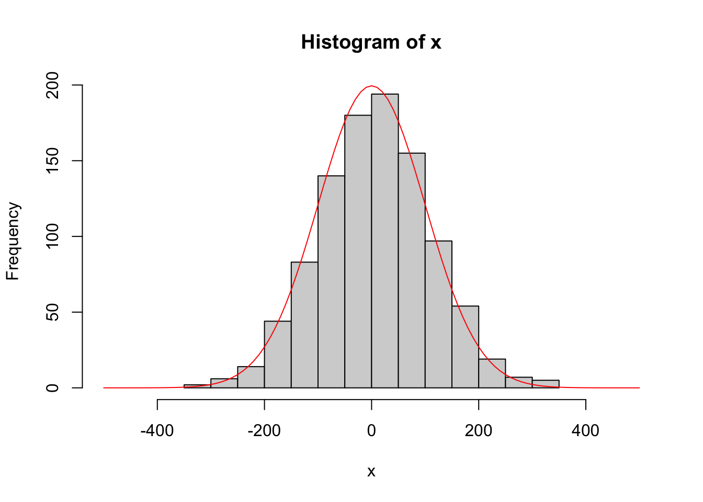

3+4[1] 7y <- 3+4
y[1] 7y_log <- log(y)
y_log[1] 1.945913+4[1] 7y <- 3+4
y[1] 7y_log <- log(y)
y_log[1] 1.94591R?RstudioR analyses in polished RMarkdown files


R resourcesRR installed
RRStudio
RStudioRStudio by adding :8787 to your AMI urlRstudio environment by locating the following features:
Rstudio by clicking the top left icon- open a new R script.RMarkdownRMarkdownR code into descriptive files to keep your life organized
R chunks into Rmarkdown documentsRMarkdown FilesRRcode chunks in RMarkdown# symbols[]R follows the normal priority of mathematical evaluation (PEDMAS)RInput code chunk and then output
4*4[1] 16Input code chunk and then output
(4+3*2^2)[1] 16<- operator.R is case sensitive.x <- 2
x*3[1] 6y <- x * 3
y-2[1] 4These do not work
3y <- 3
3*y <- 3x <- 12
x+2[1] 14x^2[1] 144log(x)[1] 2.484907log - is a built in function of R, and therefore the object of the function needs to be put in parenthesesprint commandy <- 67
print(y)[1] 67x <- 124
z <- (x*y)^2
print(z)[1] 69022864c stands for concatenatex <- "I Love"
print (x)[1] "I Love"y <- "Biostatistics"
print (y)[1] "Biostatistics"z <- c(x,y)
print (z)[1] "I Love" "Biostatistics"R thinks in terms of vectors
R user to try to write scripts with that in mindn <- c(2,3,4,2,1,2,4,5,10,8,9)
print(n) [1] 2 3 4 2 1 2 4 5 10 8 9z <- n +3
print(z) [1] 5 6 7 5 4 5 7 8 13 11 12x is now what is called a list of character values (“I Love”).factors, and we can redefine our character variables as factors.x_factor <- as.factor(x)
print (x_factor)[1] I Love
Levels: I LoveR “sees” a variable using str() or class() functions.str(x) chr "I Love"class(x)[1] "character"
int stands for integers
dbl stands for doubles, or real numbers
chr stands for character vectors, or strings
dttm stands for date-times (a date + a time)
lgl stands for logical, vectors that contain only TRUE or FALSE
fctr stands for factors, which R uses to represent categorical variables with fixed possible values
date stands for dates
FALSETRUENA which is ‘not available’.R numbers are doubles by default.NANaN which is ‘not a number’Inf-InfMany functions exist to operate on vectors.
mean(n)
median(n)
var(n)
log(n)
exp(n)
sqrt(n)
sum(n)
length(n)
sample(n, replace = T) #has an additional argument (replace=T)R and it is easy enough to write your own functions if none already exist to do what you want to do.- help(mean)
- ?mean
- example(mean)
- help.search("mean")
- apropos("mean")
- args(mean)seqsampleseq_1 <- seq(0.0, 10.0, by = 0.1)
print(seq_1) [1] 0.0 0.1 0.2 0.3 0.4 0.5 0.6 0.7 0.8 0.9 1.0 1.1 1.2 1.3 1.4
[16] 1.5 1.6 1.7 1.8 1.9 2.0 2.1 2.2 2.3 2.4 2.5 2.6 2.7 2.8 2.9
[31] 3.0 3.1 3.2 3.3 3.4 3.5 3.6 3.7 3.8 3.9 4.0 4.1 4.2 4.3 4.4
[46] 4.5 4.6 4.7 4.8 4.9 5.0 5.1 5.2 5.3 5.4 5.5 5.6 5.7 5.8 5.9
[61] 6.0 6.1 6.2 6.3 6.4 6.5 6.6 6.7 6.8 6.9 7.0 7.1 7.2 7.3 7.4
[76] 7.5 7.6 7.7 7.8 7.9 8.0 8.1 8.2 8.3 8.4 8.5 8.6 8.7 8.8 8.9
[91] 9.0 9.1 9.2 9.3 9.4 9.5 9.6 9.7 9.8 9.9 10.0seq_2 <- seq(10.0, 0.0, by = -0.1)
print(seq_2) [1] 10.0 9.9 9.8 9.7 9.6 9.5 9.4 9.3 9.2 9.1 9.0 8.9 8.8 8.7 8.6
[16] 8.5 8.4 8.3 8.2 8.1 8.0 7.9 7.8 7.7 7.6 7.5 7.4 7.3 7.2 7.1
[31] 7.0 6.9 6.8 6.7 6.6 6.5 6.4 6.3 6.2 6.1 6.0 5.9 5.8 5.7 5.6
[46] 5.5 5.4 5.3 5.2 5.1 5.0 4.9 4.8 4.7 4.6 4.5 4.4 4.3 4.2 4.1
[61] 4.0 3.9 3.8 3.7 3.6 3.5 3.4 3.3 3.2 3.1 3.0 2.9 2.8 2.7 2.6
[76] 2.5 2.4 2.3 2.2 2.1 2.0 1.9 1.8 1.7 1.6 1.5 1.4 1.3 1.2 1.1
[91] 1.0 0.9 0.8 0.7 0.6 0.5 0.4 0.3 0.2 0.1 0.0seq_square <- (seq_2)*(seq_2)
print(seq_square) [1] 100.00 98.01 96.04 94.09 92.16 90.25 88.36 86.49 84.64 82.81
[11] 81.00 79.21 77.44 75.69 73.96 72.25 70.56 68.89 67.24 65.61
[21] 64.00 62.41 60.84 59.29 57.76 56.25 54.76 53.29 51.84 50.41
[31] 49.00 47.61 46.24 44.89 43.56 42.25 40.96 39.69 38.44 37.21
[41] 36.00 34.81 33.64 32.49 31.36 30.25 29.16 28.09 27.04 26.01
[51] 25.00 24.01 23.04 22.09 21.16 20.25 19.36 18.49 17.64 16.81
[61] 16.00 15.21 14.44 13.69 12.96 12.25 11.56 10.89 10.24 9.61
[71] 9.00 8.41 7.84 7.29 6.76 6.25 5.76 5.29 4.84 4.41
[81] 4.00 3.61 3.24 2.89 2.56 2.25 1.96 1.69 1.44 1.21
[91] 1.00 0.81 0.64 0.49 0.36 0.25 0.16 0.09 0.04 0.01
[101] 0.00seq_square_new <- (seq_2)^2
print(seq_square_new) [1] 100.00 98.01 96.04 94.09 92.16 90.25 88.36 86.49 84.64 82.81
[11] 81.00 79.21 77.44 75.69 73.96 72.25 70.56 68.89 67.24 65.61
[21] 64.00 62.41 60.84 59.29 57.76 56.25 54.76 53.29 51.84 50.41
[31] 49.00 47.61 46.24 44.89 43.56 42.25 40.96 39.69 38.44 37.21
[41] 36.00 34.81 33.64 32.49 31.36 30.25 29.16 28.09 27.04 26.01
[51] 25.00 24.01 23.04 22.09 21.16 20.25 19.36 18.49 17.64 16.81
[61] 16.00 15.21 14.44 13.69 12.96 12.25 11.56 10.89 10.24 9.61
[71] 9.00 8.41 7.84 7.29 6.76 6.25 5.76 5.29 4.84 4.41
[81] 4.00 3.61 3.24 2.89 2.56 2.25 1.96 1.69 1.44 1.21
[91] 1.00 0.81 0.64 0.49 0.36 0.25 0.16 0.09 0.04 0.01
[101] 0.00Complete Exercises 1.3-1.6

x <- rnorm (n = 10000, mean = 0, sd = 10)
y <- sample (1:10000, 10000, replace = T)
xy <- cbind(x,y)
plot(xy)
x <- rnorm (10000, 0, 10)
y <- sample (1:10000, 10000, replace = T)
xy <- cbind(x,y)
hist(x)
x <- rnorm (10000, 0, 10)
y <- sample (???, 10000, replace = ???)dnorm() generates the probability density, which can be plotted using the curve() function.add=TRUEx <-rnorm(1000, 0, 100)
hist(x, xlim = c(-500,500))
curve(50000*dnorm(x, 0, 100), xlim = c(-500,500), add=TRUE, col='Red')